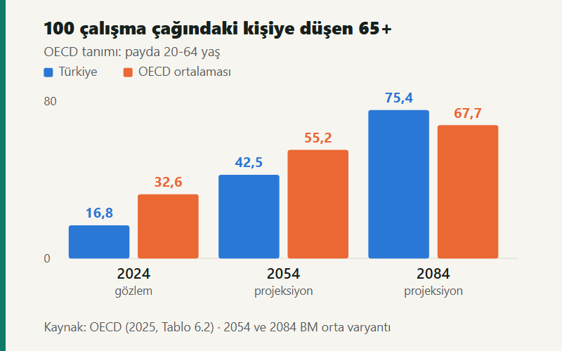

Kısa cevap
Emekliliğin finansal analizinde süre, gelir, kapsam ve fiyat düzeyi birlikte tanımlanmadan karşılaştırma yapılamaz. Demografik bağımlılık oranı sigorta sistemindeki aktif/pasif oranı değildir; teorik ikame oranı gözlenen hane geliri değildir; tasarrufun GSYH'ye oranı ile hanehalkı tasarrufunun harcanabilir gelire oranı ayrı ekonomik ilişkilerdir. Senaryolarda birikim süresinin uzaması sabit katkının dönem sonu değerini artırır; ödeme süresinin uzaması aynı reel geliri karşılamak için gereken başlangıç varlığını artırır. Çekiş yapılan dönemde getirilerin sırası da sonucu değiştirir.
Akademik künye
Bu yazı, aynı başlıklı akademik çalışmanın web sürümüdür. Metin kısaltılmamış; tablolar ve şekiller ekranda okunacak biçimde yeniden çizilmiştir. Çalışma nedensel politika değerlendirmesi veya kişiye özgü aylık tahmini içermez.
- Alt başlık
- Nüfus yaşlanması, çalışma hayatı, gelir ve tasarruf ilişkileri
- İngilizce
- The Financial Mathematics of Retirement in Türkiye
- Anahtar kelimeler
- Nüfus yaşlanması, emeklilik finansmanı, gelir ikame oranı, hanehalkı tasarrufu, reel getiri
- Veri erişimi
- 13 Eylül 2026
- Tam metin
- Academia.edu sayfası
Aynı görünen üç çift sayı
Emeklilik, çalışma döneminde elde edilen kazançlar ve biriken haklar ile çalışma sonrasındaki tüketim gereksinimleri arasında zamanlar arası bir ilişki kurar. Bu ilişki hem hanelerin bütçelerinde hem de emeklilik sistemlerinin gelir ve ödeme akımlarında gözlenir. Nüfusun yaş bileşimi ödeme ufkunu etkilerken, istihdam ve kayıtlı kazançlar finansmanın gelir tabanını belirler.
Bu boyutların aynı tanım ve zaman aralığında ele alınmaması, birbirinden farklı göstergelerin aynı ekonomik büyüklük olarak yorumlanmasına yol açar. Yazı boyunca üç ayrım korunuyor: gözlem (belirli dönem için yayımlanmış istatistik), projeksiyon (varsayımlar altında ileri taşınan hesap) ve senaryo (ilişkinin yönünü göstermek için burada seçilen sayısal örnek). Bu üçü birbirinin yerine kullanılmıyor.
| Gösterge | Ölçtüğü ilişki | Yorum sınırı |
|---|---|---|
| Yaşlı nüfus payı | 65+ nüfus / toplam nüfus | Emekli aylığı alanların oranı değildir. |
| Demografik bağımlılık | 65+ nüfus / çalışma çağındaki nüfus | Çalışma çağındaki herkes çalışmaz. |
| Aktif/pasif oranı | İdari kayıttaki aktifler / pasif dosyalar | Prim tutarını ve ödeme düzeyini içermez. |
| Net gelir ikame oranı | Net emekli aylığı / net çalışma kazancı | Model sonucu ile gözlenen aylık ayrılır. |
| Hanehalkı tasarruf oranı | Tasarruf / harcanabilir gelir | Her hanenin tasarruf davranışını vermez. |
| Fon büyüklüğü | Belirli tarihte birikmiş varlık stoku | Bir dönemin tasarruf akımı değildir. |
Yazarın kavramsal sınıflandırması. İşgücü göstergeleri anket tahmini, SGK sayıları idari kayıt, hanehalkı tasarrufu ise ulusal hesap büyüklüğüdür; bu farklı üretim yöntemleri aynı dönem için bile serilerin birbirine eşit olmasını gerektirmez.
Demografik ufuk: Türkiye nerede, ne zaman geçiyor?
TÜİK'e göre Türkiye'de 65 ve üzeri nüfus 2020'de 7,95 milyon iken 2025'te 9,58 milyona ulaşmıştır; toplam nüfustaki payı %9,5'ten %11,1'e çıkmıştır. TÜİK ana senaryosu bu payı 2030 için %13,5, 2040 için %17,9 ve 2060 için %27,0 olarak verir. Bunlar demografik varsayımlara bağlı projeksiyon değerleridir.
Uluslararası karşılaştırmada OECD, 65+ nüfusu 20-64 yaş nüfusuna böler. TÜİK'in yaşlı bağımlılık oranındaki payda ise 15-64 yaştır; bu iki oran doğrudan eşitlenemez. Aşağıdaki şekil OECD tanımını kullanır.
Şekil 1 / OECD tanımı
Türkiye bugün OECD'nin yarısında; 2084'te üstünde.
100 çalışma çağındaki kişiye (20-64 yaş) düşen 65+ nüfus. Yaşlanmanın hızı, düzeyinden daha çarpıcı: Türkiye 60 yılda 4,5 kat artıyor.
-
2024 — gözlem
Türkiye16,8 OECD32,6
-
2054 — projeksiyon
Türkiye42,5 OECD55,2
-
2084 — projeksiyon
Türkiye75,4 OECD67,7
Demografik oran, kayıtlı çalışan başına aylık alan sayısına dönüşürken istihdam, sigortalılık, yaşa göre aylık alma ve prim yoğunluğu gibi ara değişkenlerden geçer. Dolayısıyla yaş yapısı tek başına emeklilik finansmanının sonucunu belirlemez. Aynı nüfus bileşiminde istihdam edilenlerin ve prim bildirilen ayların farklı olması, finansmanın gelir tarafını değiştirir.
Yaşa koşullu yaşam beklentisi
TÜİK'in 2023-2025 hayat tablolarında doğuşta yaşam beklentisi 78,5 yıl, 65 yaşında kalan yaşam beklentisi 18,4 yıldır; bu değer erkeklerde 16,7, kadınlarda 20,0 yıldır. Emeklilikteki süre, doğuşta yaşam beklentisinden emeklilik yaşı çıkarılarak bulunmaz — ilgili yaşa ulaşmış olma koşulu hesaba katılmalıdır. Dönem hayat tablosu da tek bir kişinin ömrünü veya gelecekteki ölüm oranlarını kesin olarak belirlemez.
Çalışma süresi: haftalık saat neyi ölçmez?
TÜİK'in 2025 yıllık sonuçlarında 15+ nüfus için istihdam oranı %49,0; işgücüne katılma oranı %53,5'tir. İstihdam oranı erkeklerde %66,4, kadınlarda %32,1; toplam istihdam 32,566 milyon kişidir.
| Boyut | Gözlem | Matematiksel karşılığı |
|---|---|---|
| Haftalık fiili süre | Aralık 2025: 43,1 saat | Çalışılan dönemdeki emek girdisi |
| Türkiye işgücünden çıkış yaşı | 2024: erkek 60,8; kadın 60,5 | Çalışma hayatının sonlanma zamanı |
| OECD işgücünden çıkış yaşı | 2024: erkek 64,7; kadın 63,6 | Aynı yöntemle ülke karşılaştırması |
| Prim yoğunluğu | Ödenen/bildirilen ay ÷ potansiyel ay | Hak birikiminin zaman kapsamı |
43,1 saatlik gösterge yalnızca referans döneminde işbaşında olanlara ilişkindir ve mevsim etkilerinden arındırılmış aylık sonuçtur; yıllık ortalama olarak kullanılamaz. OECD'nin fiili çıkış yaşı ise 40+ nüfusun katılma oranlarındaki değişimlerden oluşturulan sentetik kohort ölçüsüdür; aylık bağlananların idari ortalama yaşıyla aynı değildir.
Çalışma süresini yalnızca haftalık saatle ölçmek, bir yılda çalışılan ayları ve işsizlik aralarını dışarıda bırakır. Varsayımsal olarak 30 yıllık gözlem aralığı 360 aydır. Bu aralıkta %100 prim yoğunluğu 360, %80 yoğunluk 288 ay eder; fark 72 aydır. Bu farkın aylığa etkisi hak kazanma ve aylık hesaplama kurallarına bağlıdır; buradan doğrudan %20 daha düşük aylık sonucu çıkarılamaz. Örnek yalnızca sürenin hak hesabından ayrılması gerektiğini gösterir.
Cinsiyete göre istihdam oranları da tek başına emekli aylığı farkını açıklamaz. Yaş dağılımı, ücretler, bakım nedeniyle verilen aralar, kayıtlılık, çalışma statüsü ve hak sahipliği birlikte değerlendirilmelidir. Toplam oranlar bu kanalların katkısını ayrı ayrı ölçmez.
Sigortalılık kapsamı: dosya mı, kişi mi?
SGK'nin 2025 Faaliyet Raporu, Aralık 2025 için 26.328.559 aktif sigortalı ve 16.204.425 pasif dosya kaydeder. Aylık alan kişi sayısı ise 17.015.688'dir. Yayımlanan aktif/pasif oranı 1,62'dir; payda kişi sayısı olduğunda aynı tablodan 1,55 çıkar.
| Gösterge | Düzey |
|---|---|
| Aktif sigortalı | 26.328.559 |
| Pasif: dosya | 16.204.425 |
| Pasif: aylık alan kişi | 17.015.688 |
| Yaşlılık aylığı alan kişi | 12.254.719 |
| Aktif / pasif dosya | 1,62 |
| Aktif / pasif kişi (yazar hesabı) | 1,55 |
Ayrım, ölüm aylıklarında bir dosyanın birden fazla hak sahibini kapsayabilmesi gibi idari ilişkiler nedeniyle önem taşır. Ayrıca pasif toplamı yalnız yaşlılık aylıklarından oluşmaz; aktif toplamında da zorunlu sigortalılar yanında çırak, stajyer ve kursiyer gibi gruplar vardır ve bu grupların sigorta kapsamı aynı kabul edilemez.
Oran, kapsanan birimlerin sayısal ilişkisini özetler. Ancak her aktifin aynı kazançtan, aynı sayıda ay ve aynı sigorta kolları için prim ödediği; her dosyadan da aynı tutarın çıktığı varsayımını içermez. Bu nedenle kişi veya dosya sayısından tek başına gelir-gider dengesi hesaplanamaz. Bir yıl sonu stokunu yıllık ödeme akımıyla birleştirmek de zaman uyumu gerektirir: yıl içinde yeni aylık bağlananlar, vefatlar ve işe girişler varsa Aralık sayıları yıllık ortalamadan ayrılır.
TÜİK'in toplam istihdamı SGK aktif sayısına bölünerek otomatik bir kayıtlılık oranı da elde edilmez. Araştırmanın nüfus kapsamı, ücretsiz aile işçileri, kendi hesabına çalışanlar ve idari kaydın sigorta kapsamları önce eşleştirilmelidir.
İkame oranı ile gözlenen gelir aynı şey değil
OECD'nin net ikame oranı, modeldeki net emekli aylığını bireyin net çalışma kazancına böler. Pensions at a Glance 2025, ortalama kazançlı tam kariyer için Türkiye'de erkeklerde %94,4, kadınlarda %92,7; OECD ortalamasında sırasıyla %63,2 ve %62,4 hesaplar. Gözlenen gelir ise başka bir şeyi ölçer.
Şekil 2 / İki ayrı ölçü
Aradaki 10 puan bir kayıp değil, bir tanım farkı.
Soldaki bir kariyer senaryosunun sonucu, sağdaki farklı yaşam öykülerine sahip hanelerin kesitsel gelir ortalaması. Payları, paydaları ve yılları farklı.
- Model · gelecekteki hak
-
%94,4
Pay: tam kariyer, ortalama kazançlı bir erkeğin net
emekli aylığı.
Payda: aynı kişinin net çalışma kazancı.
Kapsam: 2024'te 22 yaşında işe girip normal emeklilik yaşına kadar kesintisiz çalışma varsayımı. - Gözlem · hane geliri
-
%84,5
Pay: 65 yaş üzerindekilerin ortalama eşdeğer
kullanılabilir geliri.
Payda: toplam nüfusun aynı ortalaması.
Kapsam: 2022 gelir verisi; yalnız emekli aylığını değil hanenin tüm kullanılabilir gelirini içerir.
Bu yüzden %94,4 ile %84,5 arasındaki fark bir tahmin hatası veya doğrudan gelir kaybı olarak yorumlanamaz. Vergi ve primlerin çalışma geliri ile emekli aylığına farklı uygulanması net oranı brüt orandan ayırır; kariyer kesintileri ve kazanç yolları değiştiğinde sonuç da değişir.
Göreli oranların yanında mutlak satın alma gücü de gerekir. Varsayımsal 100 birim net kazancın %80'i 80 birim; 50 birim net kazancın %90'ı 45 birimdir. Daha yüksek ikame oranı tek başına daha yüksek emeklilik geliri anlamına gelmez. Kendi brüt-net dönüşümünüzü maaş hesaplama aracıyla, aylık bağlama mantığını emekli maaşı nasıl hesaplanır yazısıyla inceleyebilirsiniz.
Hane bütçesi: aylık tek başına yetmez
TÜİK Gelir Dağılımı İstatistikleri 2025, gelir bakımından 2024 takvim yılını referans alır. Ortalama yıllık eşdeğer hanehalkı kullanılabilir fert geliri 332.882 TL, Gini katsayısı 0,410'dur. Toplam gelirde sosyal transferlerin payı %18,2; bu transferler içinde emekli ve dul-yetim aylıklarının payı %89,3'tür.
Bir hanede emekli aylığı yanında ücret, kira, finansal gelir ve haneler arası transfer bulunabilir; ortak konut ve bazı sabit giderler paylaşılabilir. Eşdeğer gelir ölçüleri hane büyüklüğü ve bileşimini dikkate alır, kişi başına basit bölme ile aynı değildir. Birikim ihtiyacını belirleyen de tek başına aylık değil, toplam net kaynaklar ile harcama arasındaki farktır.
| Varsayımsal yıllık bütçe | Tutar (reel birim) |
|---|---|
| Emekli aylığı | 240 |
| Diğer düzenli net gelir | 60 |
| Tüketim ve planlanan gider | 360 |
| Yıllık finansman farkı | 60 |
Hane bütçesinin zaman içinde değişmesi de hesaba katılır. İki gelirli bir hanenin tek gelire geçmesi, taşınma, bakım harcaması veya kredi geri ödemesinin sona ermesi aynı emekli aylığı altında farklı nakit akışları yaratır. Ortalama gelir, gelirin kaç kişide yoğunlaştığını da göstermez; buradaki 0,410 Gini toplam nüfusa ilişkindir, yaşlı nüfusun gelir dağılımı değildir.
Üç tasarruf oranı, üç ayrı payda
TÜİK Kurumsal Sektör Hesapları 2024'te toplam gayrisafi tasarruf/GSYH oranı %30,1'dir. Hanehalkının gayrisafi tasarrufunun GSYH'ye oranı %6,9; harcanabilir gelire oranı ise %11,3'tür (2023'te %11,8). Üç oran farklı ekonomik sorulara yanıt verir.
| Gösterge | Oran | Payda |
|---|---|---|
| Toplam ekonomi gayrisafi tasarrufu | %30,1 | GSYH |
| Hanehalkı gayrisafi tasarrufu | %6,9 | GSYH |
| Hanehalkı gayrisafi tasarrufu | %11,3 | Hanehalkı harcanabilir geliri |
Gayrisafi tasarruf, sabit sermaye tüketimi düşülmeden ölçülür ve ulusal hesaplarda tasarruf, mevduat hesabına yatırılan tutardan daha geniş bir kavramdır. Sektörün ortalama oranı da her hanenin gelirinin %11,3'ünü ayırdığını veya bu tutarın emekliliğe yöneldiğini göstermez.
EGM'nin 10 Eylül 2026 tarihli özetinde gönüllü BES fon büyüklüğü 2,46 trilyon TL ve katılımcı sayısı 10,35 milyon; otomatik katılımda fon büyüklüğü 0,17 trilyon TL ve katılımcı sayısı 7,91 milyondur. İki sistemin katılımcı sayıları benzersiz kişi sayısı kabul edilerek toplanmamalıdır; aynı kişi iki sistemde birden bulunabilir. Fon tutarları da belirli tarihteki nominal stoktur: stok değişimi net katkılar, çıkışlar ve getirilerle oluşur, dolayısıyla fon büyümesi doğrudan yeni tasarruf veya reel getiri değildir.
Nominal gelir ve satın alma gücü
Emeklilik geliri yıllar boyunca ödendiği için nominal tutarların aynı fiyat düzeyine getirilmesi gerekir. TÜİK Aralık 2025 bülteninde yıllık TÜFE değişimi %30,89, on iki aylık ortalamalara göre değişim %34,88'dir; bu ikisi farklı dönemleri ölçer.
Aylıklar yıl içinde farklı tarihlerde değişiyorsa, yıl sonu aylığı ile yılın toplam satın alma gücü ayrı ölçülerdir. On iki aylık ödemenin her biri kendi ayının fiyat düzeyiyle düzeltilip toplanabilir:
Genel tüketici fiyat endeksi ortak bir karşılaştırma tabanı sunar; buna karşılık bir hanenin konut, gıda, ulaştırma ve sağlık harcaması ağırlıkları genel sepetten farklı olabilir. Burada yaşlılara özel ayrı bir fiyat endeksi hesaplanmamıştır. Kendi sepetinizin resmî orandan ne kadar saptığını kişisel enflasyon aracıyla ölçebilirsiniz.
Sistemin dönemlik finansman özdeşliği
Dağıtım esaslı emeklilik finansmanını incelemek için basitleştirilmiş bir dönem özdeşliği kurulabilir. A prim ödeyen eşdeğer birim sayısı, w ortalama prime esas kazanç, τ emekliliğe atfedilen etkin tahsilat oranı, R ödeme yapılan eşdeğer dosya sayısı, b ortalama dönemlik ödeme; T dış transferler, O diğer net kaynaklar, M idari giderler olsun.
Yalnız primle karşılanan, diğer kalemleri sıfır kabul edilen varsayımsal bir dengede ilişki b ÷ w = τ × (A ÷ R) biçimini alır:
| Varsayımsal A/R | Etkin oran τ | Finanse edilen b/w |
|---|---|---|
| 1,5 | %20 | %30 |
| 2,0 | %20 | %40 |
| 2,5 | %20 | %50 |
| 2,0 | %25 | %50 |
b/w sistemin ortalama ödemesini ortalama prim matrahına böler; OECD'nin bireysel net ikame oranıyla aynı ölçü değildir. Aynı ödeme düzeyinde A/R yükselirse primle karşılanabilen tutar artar. Ancak aylıklar da kazançlarla birlikte değişiyorsa gelir ve gider tarafları eşzamanlı hareket edebilir; tek değişkenli karşılaştırma, diğerlerinin sabit tutulduğu bir duyarlılık hesabıdır.
Ödemeleri toplam üretime oranlamak da benzer bir ayrıştırma verir:
Birikim süresi ve reel getiri
Başlangıç varlığı sıfır, yıl sonunda yapılan reel katkı C, yıllık sabit reel net getiri r ve birikim süresi n olsun:
Şekil 3 / Senaryo
Süre yalnız katkı sayısını değil, getiri kazanma süresini de uzatır.
Her yıl sonunda 60.000 TL sabit satın alma gücünde katkı. Sonuçlar bin reel TL; başlangıç varlığı sıfır.
| Süre | %0 reel net | %2 reel net | %4 reel net |
|---|---|---|---|
| 20 yıl | 1.200 | 1.458 | 1.787 |
| 30 yıl | 1.800 | 2.434 | 3.365 |
| 40 yıl | 2.400 | 3.624 | 5.702 |
30 yılda %2 reel net getiri altında yaklaşık 2,43 milyon reel TL birikir. Aynı katkıyla 20 yıl yaklaşık 1,46 milyon, 40 yıl yaklaşık 3,62 milyon reel TL üretir.
Kesintinin zamanı da önemlidir. 30 yıllık dönemin başındaki beş katkı yapılmaz, sonraki 25 yıl aynı katkı sürerse %2 reel getiride yaklaşık 1,92 milyon reel TL elde edilir; tam senaryoya göre fark yaklaşık 512 bin reel TL'dir. Bu hesap kesintinin zamanını açıkça tanımlar; herhangi beş yıllık kesintiyle aynı sonuç beklenmez.
Net oranın kendisi de belirleyicidir: 30 yıl boyunca reel net getirinin %3 yerine %2 olması, aynı katkı altında birikimi yaklaşık 2,85 milyondan 2,43 milyon reel TL'ye indirir — yaklaşık %14,7 fark. Bu, gider, vergi, portföy getirisi veya bunların birleşiminden kaynaklanabilir; örnek belirli bir fonun maliyetini veya performansını ölçmez.
Sabit reel katkı, nominal katkının fiyat düzeyiyle birlikte artması varsayımını içerir. Nominal katkı sabit tutulursa reel katkı yolu farklı olur ve yukarıdaki tablo geçerli olmaz. Gerçek getiriler de her yıl sabit değildir; sonuçlar birikimin olasılık dağılımını göstermeyen deterministik hesaplardır.
Ödeme süresi ve gereken başlangıç varlığı
Emeklilikte diğer net gelirler düşüldükten sonra her yıl sonunda karşılanacak sabit reel finansman farkı G, ödeme süresi m ve reel net getiri r olsun:
Şekil 4 / Senaryo
Aynı geliri beş yıl daha ödemek 345 bin TL daha fazla varlık ister.
Yıllık 120.000 TL reel finansman farkı için gereken başlangıç varlığı, bin reel TL. Ödemeler yıl sonundadır.
| Ödeme süresi | %0 reel net | %2 reel net | %4 reel net |
|---|---|---|---|
| 20 yıl | 2.400 | 1.962 | 1.631 |
| 25 yıl | 3.000 | 2.343 | 1.875 |
| 30 yıl | 3.600 | 2.688 | 2.075 |
İki aşama birleştirildiğinde tablo tamamlanır. 25 yıllık, yıllık 120.000 TL reel farkı %2 getiriyle karşılayacak 2,34 milyon reel TL'yi biriktirmek için birikim aşamasında da %2 getiri varsayılırsa, 20 yıl boyunca yılda yaklaşık 96.400 TL; 30 yıl boyunca 57.800 TL; 40 yıl boyunca 38.800 TL reel katkı gerekir.
Aynı hedefe daha uzun sürede ulaşılması yıllık katkıyı azaltır. Ancak daha uzun birikim dönemi varsayımı; işe giriş tarihi, gelir devamlılığı, sağlık, bakım sorumlulukları ve istihdam olanaklarından bağımsız gerçekleşmiş sayılmaz. Formül ekonomik ilişkinin büyüklüğünü verir, bireyin bu yolu izleyebileceğini varsaymaz. Kendi sayılarınızla denemek için finansal özgürlük hesaplama ve birikim hesaplama araçlarını kullanabilirsiniz.
Getirilerin sırası: aynı ortalama, farklı sonuç
Sabit oranlı formüller karşılaştırmayı kolaylaştırır; emeklilikte ise değişken getirilerin sırası ayrıca önem taşır. Çekiş yapıldığı için aynı getiri dizisinin farklı sıraya konması farklı dönem sonu varlık üretir.
Şekil 5 / İki yol
Aynı iki getiri, ters sırayla: 4,5 birim fark.
Başlangıç 100 birim, her yıl sonunda 10 birim çekiş. Çekiş olmasaydı iki yol da başlangıç değerine dönerdi: 0,80 × 1,25 = 1.
100 × 0,80 − 10 = 70 → 70 × 1,25 − 10 = 77,5
100 × 1,25 − 10 = 115 → 115 × 0,80 − 10 = 82,0
Ortalama kalan yaşam süresini tek bir son tarih olarak kullanmak da ortalamanın üzerinde yaşayanları dışarıda bırakır. İki kişilik hanede son hayatta kalan kişinin ihtiyaçları tek kişinin ortalama ömrüyle temsil edilmez; eşin vefatıyla gelirler ve giderler aynı oranda değişmeyebilir.
Harcama yolunun sabit reel tutar olması da bir varsayımdır: çalışmayla bağlantılı bazı giderler azalabilir, bakım ve destek hizmetleri farklı yaşlarda ortaya çıkabilir. Ayrıca toplam varlık ile hemen kullanılabilir varlık ayrımı gerekir; ikamet edilen konutun piyasa değeri doğrudan aylık harcamaya çevrilemez. Bu boyutlar, tek bir hedef birikim tutarını evrensel ölçü haline getirmeyi sınırlar.
Sonuç
Türkiye'de emekliliğin finansal matematiği, nüfus oranlarını çalışma gelirine, çalışma gelirini prim ve tasarruf akımlarına, bu akımları da emeklilikteki tüketim süresine bağlayarak açıklanabilir. Göstergelerin birlikte okunması için tarih ve tanım uyumu gerekir.
| Değişken değiştiğinde | Diğerleri sabitken mekanik ilişki |
|---|---|
| Prim ödenen ay sayısı artar | Katkı tabanı ve birikim süresi genişler; aylık etkisi kurallara bağlıdır. |
| Prime esas reel kazanç artar | Prim geliri artar; ilerideki haklar da kazanca bağlı değişebilir. |
| Ödeme süresi uzar | Sabit reel ödeme için gereken başlangıç varlığı artar. |
| Reel net getiri artar | Sabit katkıyla birikim artar; aynı ödeme için gereken varlık azalır. |
| Emeklilikte diğer net gelir artar | Aynı harcama düzeyinde varlıktan karşılanacak fark azalır. |
| Harcamanın reel düzeyi artar | Aynı gelirler altında finansman farkı büyür. |
Özellikle yaşlı/çalışma çağı oranı ile aktif/pasif oranı; teorik ikame oranı ile gerçekleşmiş hane geliri; nominal fon stoku ile reel yeni tasarruf ayrı tutulmalıdır. Sunulan veriler ve özdeşlikler tek bir kurumun veya politikanın performansını ölçmez. Bu çerçevede emeklilik, bir yaş eşiğinin yanında yaşam boyunca oluşan sürelerin, gelirlerin ve varlıkların ortak hesabıdır.
Kaynakça
Birincil kaynaklar
- Emeklilik Gözetim Merkezi (2026). Özet veriler (10 Eylül 2026). egm.org.tr
- OECD (2025). Pensions at a Glance 2025: OECD and G20 Indicators. OECD Publishing. doi.org/10.1787/e40274c1-en
- Sosyal Güvenlik Kurumu (2026). 2025 yılı faaliyet raporu, Tablo 29, s. 72. sgk.gov.tr
- TÜİK (2025a, 26 Aralık). Gelir dağılımı istatistikleri, 2025 (Sayı 53993). veriportali.tuik.gov.tr
- TÜİK (2025b, 9 Ekim). Kurumsal sektör hesapları, 2024 (Sayı 57929). veriportali.tuik.gov.tr
- TÜİK (2026a, 29 Temmuz). Hayat tabloları, 2023-2025 (Sayı 58232). veriportali.tuik.gov.tr
- TÜİK (2026b, 25 Mart). İşgücü istatistikleri, 2025 (Sayı 57996). veriportali.tuik.gov.tr
- TÜİK (2026c, 29 Ocak). İşgücü istatistikleri, Aralık 2025 (Sayı 57982). veriportali.tuik.gov.tr
- TÜİK (2026d, 12 Mart). İstatistiklerle yaşlılar, 2025 (Sayı 58231). veriportali.tuik.gov.tr
- TÜİK (2026e, 5 Ocak). Tüketici fiyat endeksi, Aralık 2025 (Sayı 58294). veriportali.tuik.gov.tr
Kaynak kontrolü: . Mikro veri kullanılmamıştır; dağılımlar ve bireysel geçişler toplam göstergelerden yeniden kurulamaz. Yaş, eğitim, sektör ve kazanç bileşiminin etkisi istatistiksel olarak ayrıştırılmamıştır, dolayısıyla gözlenen farklar nedensel etki olarak sunulmaz. Hesapta ya da kaynakta hata bildirmek için iletişim sayfasını, güncelleme yaklaşımı için yayın ilkelerini kullanabilirsiniz.
Ek A — Hesaplama ayrıntıları
Birikim tablolarında başlangıç varlığı sıfır; yıllık reel katkı 60.000 TL; süre 20, 30 veya 40 yıl; reel net getiri %0, %2 veya %4'tür. Ödeme tablolarında yıllık reel çekiş 120.000 TL; süre 20, 25 veya 30 yıldır. Her iki aşamada işlemler yıl sonundadır. Vergi ve giderler net getiri tanımının içindedir; ayrı teşvik veya ürün kuralı kullanılmamıştır. Tablolar bin TL'ye, yıllık katkı örnekleri yüz TL'ye yuvarlanmıştır.